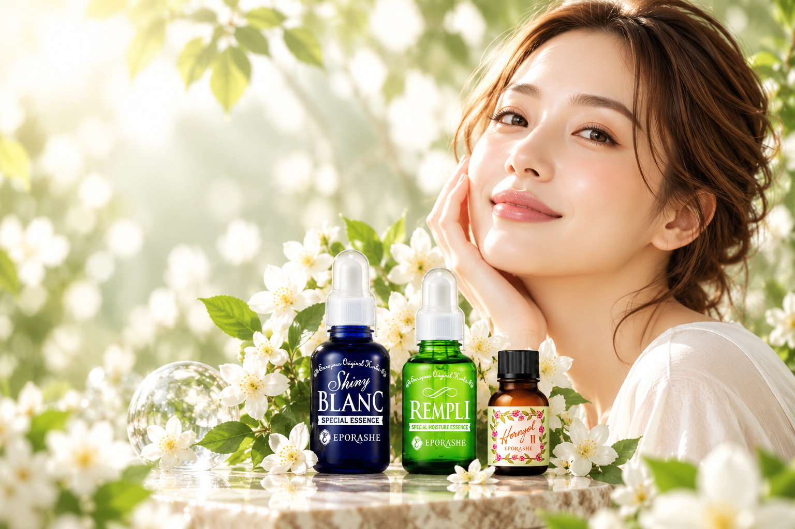
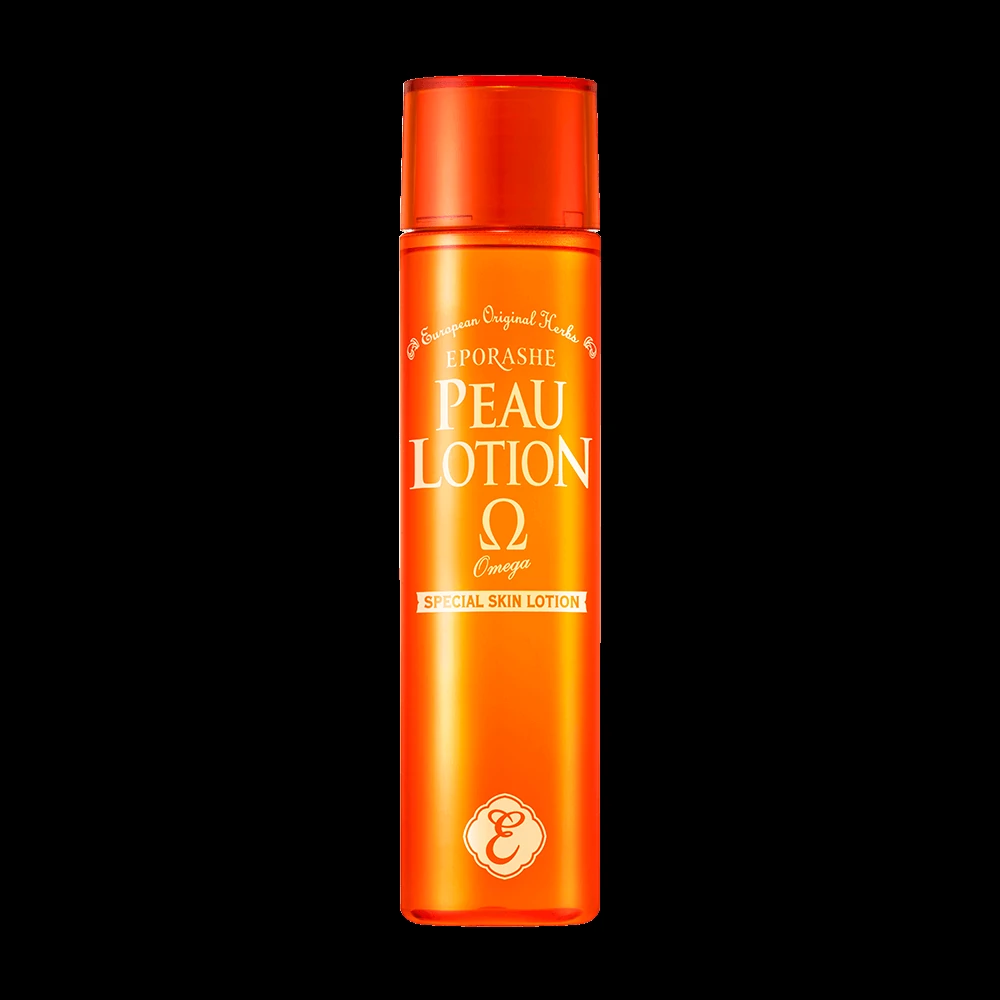
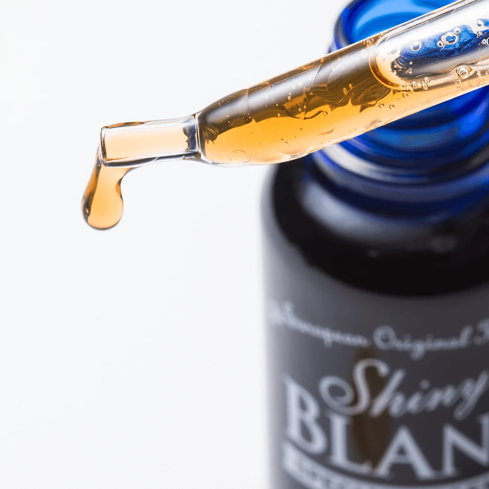
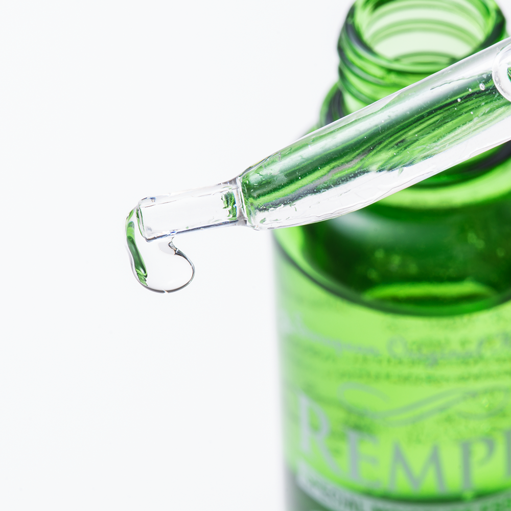
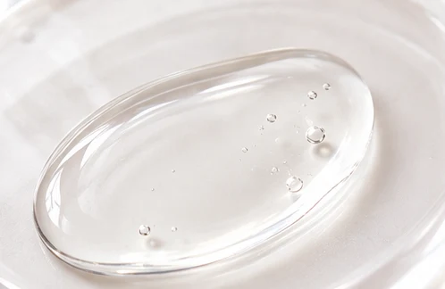
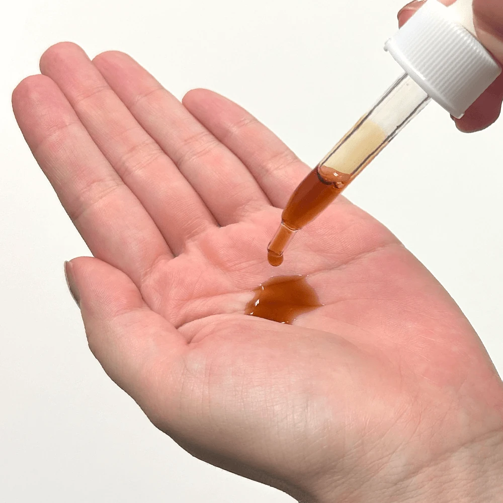
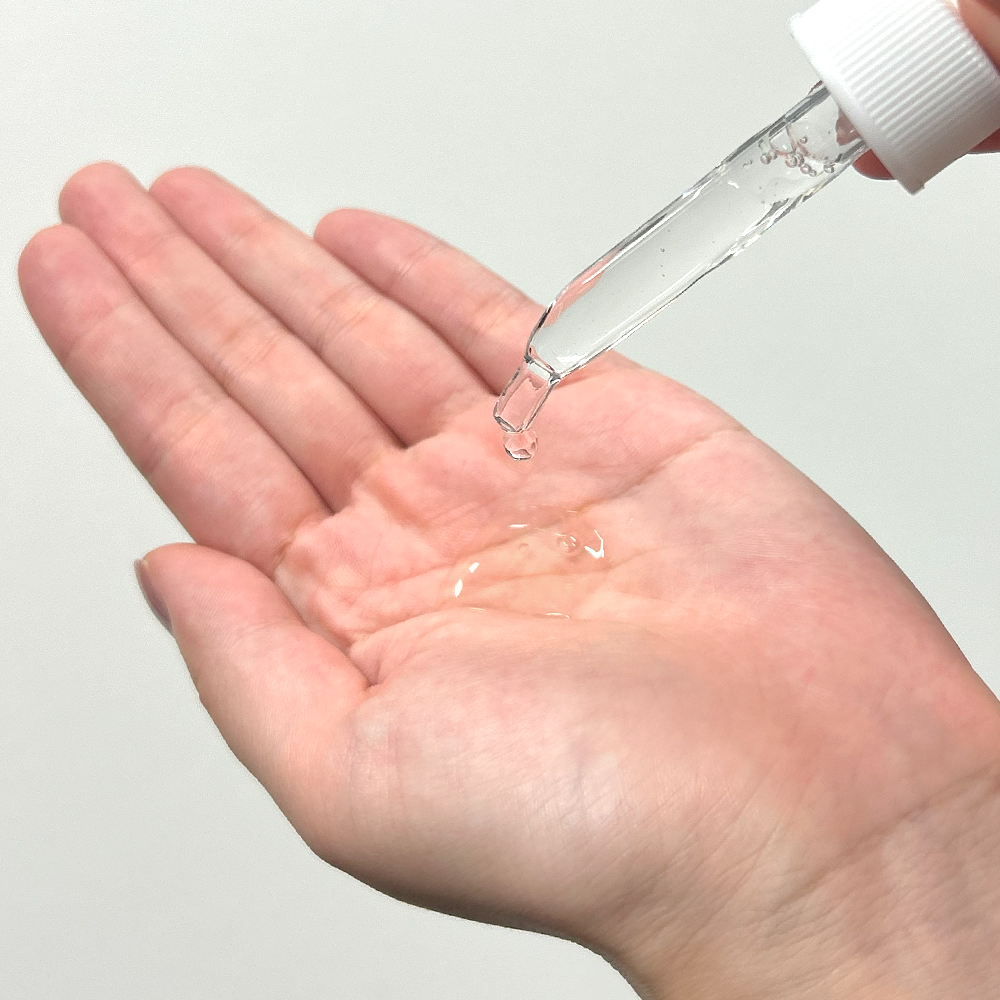
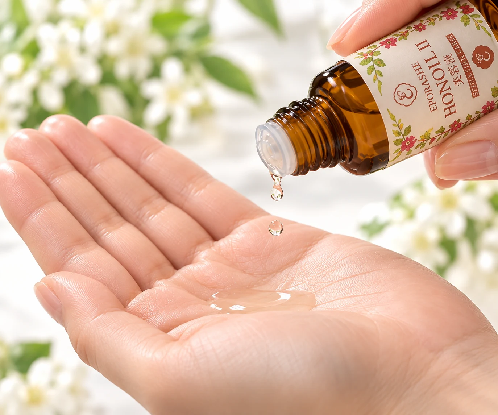

シャイニーブラン

- 目的
- うるおいによる透明感のある肌印象
- 代表成分
- ウワウルシ葉エキス／ユキノシタエキス
- 使用感
- みずみずしい。植物由来の色・香りが特徴
- 順番・1回量
- 化粧水のあと／スポイト3〜4滴
- 容量・目安
- 30mL／約1〜1.5カ月
- 通常価格
- 6,600円（税込）
EPORASHE / SERUM GUIDE
あなたの肌悩みから、選べる3つの美容液
透明感、うるおい、ハリ。
あなたの肌が求める美容液を見つけませんか？
3つの美容液の違い・選び方・使い方を、
ひと目でわかりやすくまとめたガイドページです。
3つの美容液の違いから、今の肌に合う1本を。
あなたに合う美容液を見つける →
EPORASHE 3 SERUMS — 目的に合わせて選ぶ3つの美容液


01 / SKINCARE BASICS
毎日のお手入れのなかで、美容液は目的に合わせたケアをプラスするアイテム。高価なものや本数の多さではなく、今の肌に必要なものを考えて選びましょう。

THE EPORASHE ROUTINE
基本のうるおいケアを整えたあと、気になることに合わせて美容液を選ぶ。写真はエポラーシェのピューローションオメガです。
※化粧水の種類や使用順は、ご使用商品の公式案内に従ってください。※上記は基本的な考え方です。ホニオールⅡは化粧水・美容液のあとに使用します。
いつものケアに何を足すか。美容液選びは、肌の心地よさを考える時間です。
3つの質問から選ぶ →※イメージビジュアルであり、商品の使用結果を表すものではありません。
02 / FIND YOUR SERUM
似ているようで、選ぶ目的は違う。
肌と向き合うための3つの美容液をご紹介します。
植物のイメージBOTANICAL LIGHT01 / CLARITY & RADIANCE
20年以上愛される、植物由来成分にこだわった美容液。ウワウルシ葉エキスをはじめとする成分を配合。うるおいによってキメの整った明るい肌印象を目指す方へ。
30mL / ¥6,600 税込・通常価格
公式商品ページへ →みずみずしい水のイメージAQUA & MOISTURE02 / PURE MOISTURE
油分を使用せず、水溶性成分による保湿にこだわったロングセラー。アロエベラ液汁、ポリ-γ-グルタミン酸Na、ヒアルロン酸Naを配合。乾燥が気になる肌の毎日のお手入れに。
30mL / ¥9,680 税込・通常価格
公式商品ページへ →あたたかな光のイメージGENTLE FOCUS03 / PLUS ONE CARE
バクチオールとアセチルヘキサペプチド-8を配合したオイル美容液。さらっとした使用感を目指して改良され、化粧水・美容液のあとに1〜2滴をなじませます。
10mL / ¥5,500 税込・通常価格
数量限定400個のため、販売状況は購入時に公式ページでご確認ください。
公式商品ページへ →03 / COMPARE
価格だけではなく、目的・使い方・使用感まで比較。
※使用目安期間は公式記載。使用量により個人差があります。価格は2026年10月28日に確認した通常価格です。
04 / 3 QUESTIONS
3つの質問で、美容液選びのヒントを見つけましょう。
FIND YOUR SERUM
透明感・うるおい・プラスケア。
今の肌のことを、少しだけ教えてください。
05 / LAYERING GUIDE
「何本も使うほどよい」わけではありません。
1本からでも、目的に応じて選ぶことから。
ONE SERUM
まずは、1本。今の優先したい目的に合わせて、基本の美容液を選ぶ方法。
TWO SERUMS
両方が気になるとき。2本を検討する場合は、肌の状態や負担感を考え、併用時の順序を公式窓口で確認してください。
PLUS ONE
集中ケアをプラス。ホニオールⅡの公式使用順序に基づく案内。仕上げのクリーム・ゲルとの順番は使用商品の案内もご確認ください。
※シャイニーブランとリンプルの相互の重ねる順序は確認できていないため指定していません。
06 / TEXTURE NOTES
実物写真2点と、ホニオールⅡの透明液を表現した生成イメージでご紹介。



※シャイニーブラン・リンプルはご提供の実物画像。ホニオールⅡは装飾的な透明液の図解（実物の質感比較ではありません）。
07 / DAILY ROUTINE



※ホニオールⅡは公式で朝晩使用について言及されています。具体的な全製品の重ね順は使用する各商品の案内に従ってください。
08 / FAQ
年齢だけで決めるものではありません。乾燥など気になることや、今のお手入れに必要な役割から選びましょう。
化粧水は肌にうるおいを与える基本のケア、美容液は目的に応じてお手入れを追加するアイテムです。
シャイニーブランはうるおいによる透明感のある肌印象、リンプルは乾燥・保湿に重点を置いた美容液です。
今回の調査ではシャイニーブランとリンプルの重ねる順序を公式に確認できませんでした。併用を検討する場合は公式窓口へご確認ください。
公式商品説明では朝晩の使用に言及されています。肌の状態を見ながら、公式の使用方法に従ってください。
ホニオールⅡは公式説明で朝晩の使用が案内されています。シャイニーブランとリンプルは公式の商品説明にある使用量・使用順序を確認してお使いください。
保湿の仕上げとして取り入れる選択肢があります。お使いの商品に応じて調整してください。
3商品とも公式使用目安は約1カ月〜1カ月半。実際の期間は使用量によって異なります。
09 / YOUR NEXT STEP
まずは今の肌に必要なことから選んでみませんか。
その他の関連LPは正式公開URLが確認できた段階で追加します。